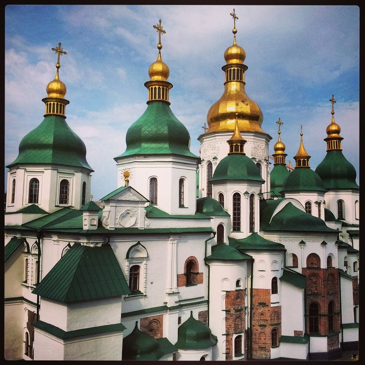
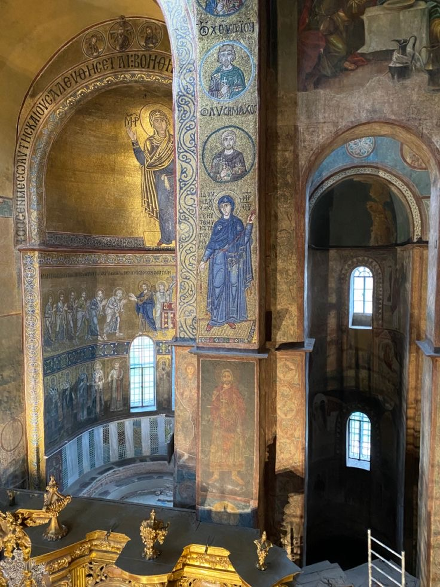
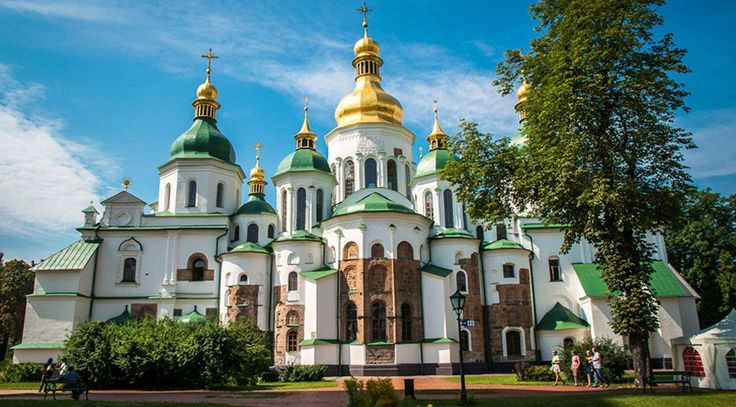

Софіївський собор у Києві – одна з найвизначніших пам'яток історії, культури й архітектури, яка вражає величчю і красою вже понад тисячу років. Цей храм, зведений у середині XI століття за часів князя Ярослава Мудрого, є уособленням величі Київської Русі та її духовної сили. Його унікальність і значущість не лише для українського народу, а й для всього світу пояснюють, чому Софіївський собор вважається чудом України.
Софіївський собор – це безцінний шедевр архітектури. Його зведено у стилі, що поєднує візантійські й давньоруські традиції. Багатокупольна конструкція храму символізує Небесний Єрусалим, а гармонійні пропорції і численні деталі свідчать про високий рівень будівельної майстерності майстрів того часу. Також собор є одним із найдавніших християнських храмів у Східній Європі, який зберігся до наших днів. Він став місцем хрещення, молитви й духовного єднання для багатьох поколінь українців. Храм будували як символ перемоги християнства і князівської влади, тому його назва – Софія, що означає «мудрість», – уособлює божественну мудрість і гармонію. Особливе місце Софіївський собор займає завдяки своїм унікальним мозаїкам і фрескам XI століття. Велична мозаїка Богоматері Оранти, яка підняла руки в молитві, стала символом захисту Києва. Давні майстри використали золото й дорогоцінні камені для створення цих зображень, і вони досі вражають яскравістю кольорів і художньою досконалістю.
Собор також відігравав важливу роль у політичному й культурному житті Київської Русі. Тут відбувалися коронації князів, приймалися іноземні посли й підписувалися важливі державні документи. Ярослав Мудрий заснував у соборі бібліотеку – одну з перших у Східній Європі, що підкреслює значення храму як осередку науки й освіти. З плином століть Софіївський собор пережив чимало випробувань – набіги, війни, зміни влади. У XVII столітті він був реставрований у стилі українського бароко, зберігши водночас оригінальні елементи. Собор став символом незламності українського народу й духовної спадщини. У ХХ столітті Софіївський собор отримав статус музею, що дозволило зберегти його для нащадків. У 1990 році його включили до списку Світової спадщини ЮНЕСКО, визнавши його значення для всього людства.
Сьогодні Софіївський собор – це місце, яке об’єднує минуле й сучасність. Сюди приходять люди, щоб помилуватися його красою, відчути дух історії й задуматися про вічні цінності. Він є свідком багатьох етапів розвитку України й водночас нагадуванням про багату духовну й культурну спадщину нашого народу. Це не просто храм – це місце, де минуле й сучасність зустрічаються, надихаючи на збереження й примноження нашої спадщини. У Софії Київській зосереджена душа українського народу, і саме тому цей собор залишається джерелом гордості та духовного натхнення для нас усіх.